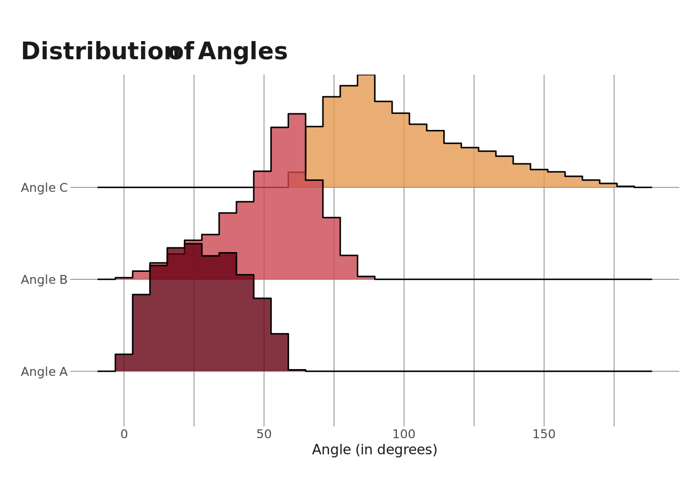

library(tidyverse)
library(ggridges)
library(eemisc)
herm <- harrypotter::hp(n = 1, option = "HermioneGranger")
theme_set(theme_ee())
opts <- options(
ggplot2.discrete.fill = list(
harrypotter::hp(n = 3, option = "HermioneGranger"),
harrypotter::hp(n = 5, option = "Always")
)
)I saw this question on Reddit last night, and it seemed interesting to me & like a pretty quick blog post (which feels like all I have time for lately), so I wanted to run with it.
The question is: Three numbers between 0 and 1 are randomly chosen. What is the probability that the 3 numbers are the lengths of the sides of a triangle?
There’s probably a mathematical way to answer this question, but I’m going to approach it using simulation. First, let’s load packages and do some setup (note that we can do all of this first part in base R, but I’m loading some packages to help out with the bonus section at the end).
Defining the Problem
Our problem is fairly straightforward. My approach is to think about it like this: - If we choose 3 random numbers between 0 and 1, could they correspond to the lengths of a triangle? - If we repeated the previous step thousands (or millions) of times, what percent of the trials would form triangles. This will approximate the actual probability.
The other piece of information that’s relevant here is the requirement that, to form a triangle, the sum of the lengths of the two shorter segments must be longer than the length of the longest segment. Which makes sense intuitively if you think about what a triangle actually looks like.
Simulating & Evaluating a Single Case
Simulating a single trial is very straightforward and only requires the runif() function, which randomly samples from a uniform distribution (note that I used to think this function meant “run if…” and was very confused by it). We can do this as follows:
set.seed(0408)
x <- runif(n = 3, min = 0, max = 1)
x[1] 0.009171368 0.084638904 0.618047172Now that we have these random numbers, the task is to figure out whether they can serve as the lengths of a triangle. Thinking back to our previous rule, we need the sum of the two shorter numbers to be greater than the largest number. We can evaluate this by:
min(x) + median(x) > max(x)[1] FALSEFor our first example, we see that this is false
Simulating & Evaluating Many Cases
Ok, great. Now that we’ve managed to do this once, we just need to repeat the process several times. After evaluating many repeated trials, we’ll have our (approximate) probability. Here, I’m going to write a function to do simulate some numbers and then evaluate whether they could be the lengths of the sides of a triangle.
sim_func <- function() {
x <- runif(n = 3, min = 0, max = 1)
min(x) + median(x) > max(x)
}
sim_func()[1] TRUEAnd then the next step is to run that function several times (I’m going to go with 100,000) and then calculate the % that evaluate to TRUE.
calc_prob <- function(sims) {
tmp <- replicate(sims, sim_func())
sum(tmp)/sims
}
set.seed(0408)
calc_prob(1e5)[1] 0.50059We arrive at an answer of about 50%.
Bonus – Calculating Triangle Angles
Now that we’ve determined how to simulate a bunch of triangles by evaluating the lengths of their sides, we can go a step further and calculate all the interior angles of these triangles. To do this, I’ll need to tweak my earlier function a little bit – rather than returning TRUE/FALSE, I need it to now return each of the sides. After simulating 10,000 (potential) triangles, I’ll filter for just those that actually can be triangles.
sim_sides <- function() {
x <- runif(n = 3)
tmp <- tibble(a = min(x), b = median(x), c = max(x))
}
set.seed(0408)
simmed_triangles <- replicate(10000, sim_sides(), simplify = FALSE) %>%
bind_rows() %>%
filter(a + b > c)The next step is to throw it back to high school geometry and the law of cosines. Using the formula below, we can calculate any angle of a triangle if we know the lengths of the three sides:
\(\gamma = cos^{-1}(\frac{a^2 + b^2 - c^2}{2ab})\)
where \(\gamma\) is the angle we’re solving for, a and b are adjacent angles, and c is the angle opposite \(\gamma\). One other thing to keep in mind is that R will calculate these angles in radians, so I’ll need to convert them to degrees (well, I don’t need to, but I’d prefer to).
calc_angle <- function(opp, adj1, adj2) {
180*(acos((adj1^2 + adj2^2 - opp^2)/(2*adj1*adj2)))/pi
}
simmed_angles <- simmed_triangles %>%
mutate(ang_a = calc_angle(a, b, c),
ang_b = calc_angle(b, a, c),
ang_c = calc_angle(c, a, b),
id = row_number())I’m going to check to make sure that the sum of the angles equals 180 (which much be true for triangles).
simmed_angles %>%
mutate(is_180 = between((ang_a + ang_b + ang_c), 179.9, 180.1)) %>%
distinct(is_180)# A tibble: 1 × 1
is_180
<lgl>
1 TRUE Cool, so the sum of all of the angles is 180.
Angle C should always be the largest angle, which means it must be >= 60. Let’s do a quick check on that here.
range(simmed_angles$ang_c)[1] 60.36463 179.27215Great. And let’s finally plot the distribution of these angles
simmed_angles %>%
select(-c("a", "b", "c")) %>%
pivot_longer(cols = -id,
names_to = "nms",
values_to = "value") %>%
ggplot(aes(y = nms, x = value)) +
geom_density_ridges(aes(fill = nms), alpha = .8, stat = "binline") +
scale_y_discrete(labels = c("Angle A", "Angle B", "Angle C")) +
labs(
x = "Angle (in degrees)",
y = NULL,
title = "Distribution of Angles"
) +
theme(
legend.position = "none",
)
Great, so we learned how to determine whether 3 random numbers could form the sides of a triangle and how to calculate the angles for those that did form a triangle.
Reuse
Citation
BibTeX citation:
@online{ekholm2020,
author = {Ekholm, Eric},
title = {Simulating {Triangles?}},
date = {2020-10-18},
url = {https://www.ericekholm.com/posts/simulating-triangles},
langid = {en}
}
For attribution, please cite this work as:
Ekholm, Eric. 2020. “Simulating Triangles?” October 18,
2020. https://www.ericekholm.com/posts/simulating-triangles.